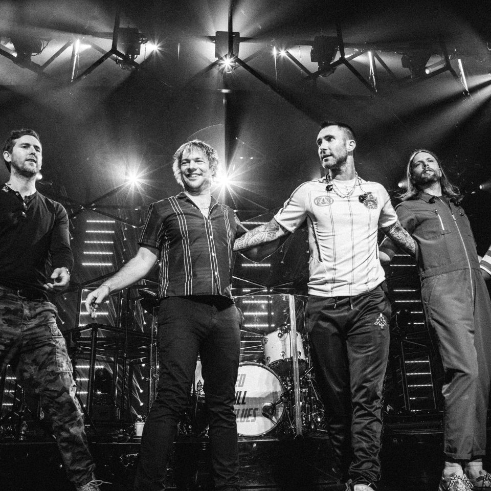

Maroon 5 is a five piece American pop-rock band with a high popularity rating and lasting appeal to fans. The group sky rocketed to fame with the first single off their "Letters to Jane" album entitled, "This Love." The band is known for their ability to produce a sultry music video as well as an energetic concert and tour show. The band originated as a garage band in Los Angeles, California in 1997. Then known as "Kara's Flowers" the group produced just one album before adding a new guitarist and changing their name. Maroon 5's initial festival touring years between 2003-2005 lead to a cult following of fans that has seen them through three albums. Most recently the band had a 2010 album release"Hands All Over." Prior to that there was their 1998 debut album "Songs about Jane", and 2007's follow up record "It Won't Be Soon Before Long." Best known singles include She Will be Loved, This Love, Sunday Morning, Harder to Breathe, Won't Go Home Without You, Wake Up Call and Moves Like Jagger. The band has received critical acclaim and awards in the form of a Grammy for Best New Song in 2005. Check out their latest single, Moves Like Jagger.
